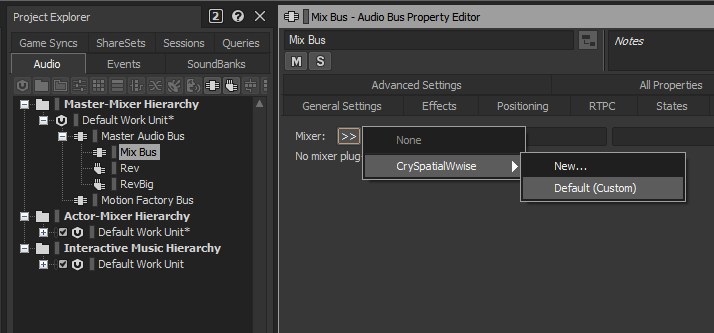
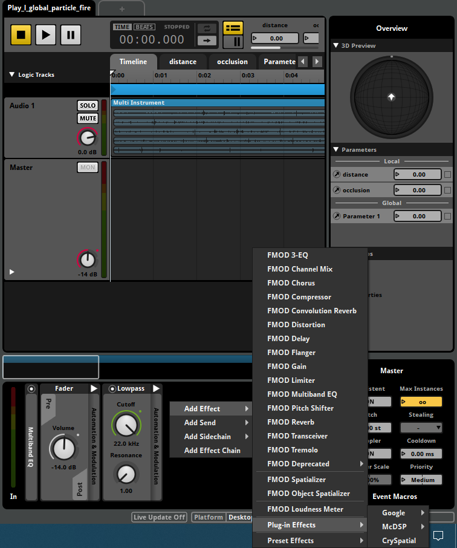

Overview
CrySpatial is a Head-Related Transfer Functions (HRTF) audio plugin that allows users to enhance the soundscapes of their games with binaural audio. Upon each mono sound that is passed through it, CrySpatial filters out and computes a separate audio track for each of the listener's ears.
Since the plugin is deployed differently from other Engine modules, its setup is covered on this page.
For The Coder
In general, audio plugins must:
- Be loaded by the audio engine during runtime, so that its functionality becomes available in your Game and in the Editor.
- Provide a dynamic library, for the audio designer, to be integrated into the authoring tool of your middleware.
Authoring
To get CrySpatial up and running for your audio designer, compile it and hand over the following files based on the middleware implementation used.
- CrySpatialWwise.dll and CrySpatialWwise.xml, if using Wwise.
- CrySpatialFmod.dll, if using FMOD.
Engine
When compiled as a dynamic library, CrySpatial is loaded as part of the middleware's audio engine on initialization.
- In the case of Wwise, the audio engine searches for the CrySpatial plugin library in the Engine's binaries, which is also where the plugin is built to. There are hence no further steps involved after CrySpatialWwise is compiled.
- In the case of FMOD, custom plugins such as CrySpatial must be located with the other audio assets in the ...\Assets\Audio\fmod\plugin folder of your project. This path could also be changed to the path of your FMOD project binaries.
For The Audio Designer
To be able to use CrySpatial in your middleware's authoring tool, the files listed in the section above need to be copied over to the plugin folder of your middleware.
Setup
Wwise
Copy CrySpatialWwise.dll and CrySpatialWwise.xml into the Audiokinetic\Wwise <version>\Authoring\x64\Release\bin\plugins folder of your Wwise installation. CrySpatial can then be loaded as a MixerPlugin on your Mix buses after restarting Wwise.
CrySpatial won't work in the Wwise Authoring Software if either CrySpatialWwise.dll or CrySpatialWwise.xml is missing.
FMOD
The user plugin directory for FMOD projects can be defined under the Preference → Assets → Plug-ins Folder option of your FMOD window's main menu.
Copy CrySpatialFmod.dll to this user plugins directory and restart FMOD Studio; CrySpatial should now become available as a Plug-in Effect.
Usage
CrySpatial's main functionality is to consume a 1-Channel Mono input and provide a 2-Channel Binaural output, meaning it should not be used with sources that are not Mono.
Wwise
CrySpatialWwise is used like a normal Mix plugin, by adding it to a mix bus and routing mono voices to it.

CrySpatialWwise
Similar to other Spatialization plugins, CrySpatial cannot consume multi-channel signals; these signals cause issues, such as high-pitched feedback-like sounds that appear when routing stereo files into CrySpatial in Wwise v2018 and earlier.
This also means that CrySpatial should be inserted on the lowest bus in your hierarchy, to prevent other buses from changing the number of channels of a file before going into CrySpatial.
CrySpatial will, based on the output configuration of its bus, produce either a 2-channel binaural, 5.1 Surround, or 7.1 Surround output of the voices routed to it. This is especially useful for games that support multiple speaker configurations, since you don't have to create multiple Mix setups for different situations.
FMOD
FMOD utilizes Mixing plugins on a per-voice basis. That means CrySpatial has to be added as a Plug-in Effect to voices that should be spatialized.

Plug-in Effect
CrySpatial only works for setups that provide a 1-Channel Mono input, producing a 2-Channel binaural output that is not Attenuated.
In order to have attenuation, the FMOD Attenuation Effect has to be added after CrySpatial has been added as a Plug-in Effect.